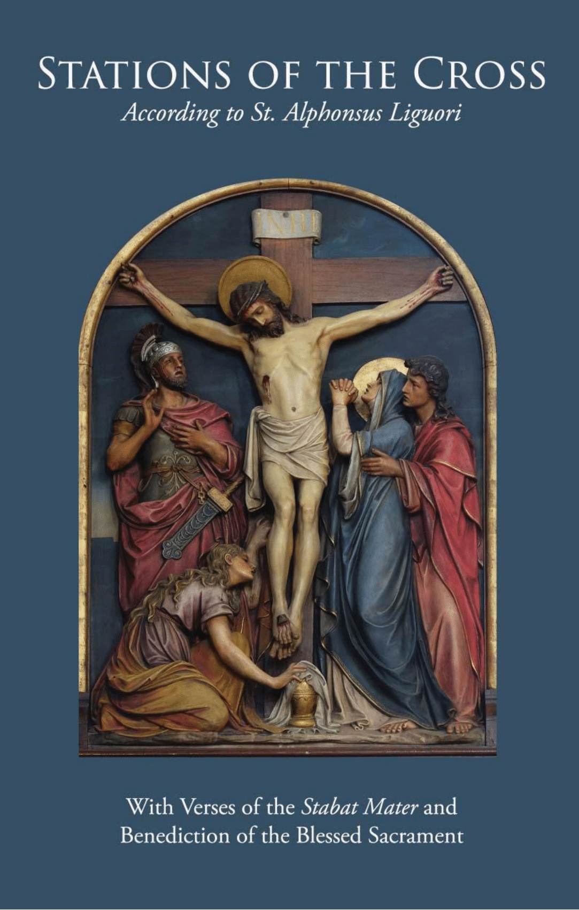
Stations of the Cross
A devotion commemorating Christ's Passion and death. Traditionally prayed during Lent, especially on Fridays.
Plenary Indulgence
Under the usual conditions*, a Plenary Indulgence is granted to the faithful who make the pious exercise of the Way of the Cross. Those who are impeded can gain the same indulgence if they spend at least one half an hour in pious reading and meditation on the Passion and Death of our Lord Jesus Christ.
*Receive Holy Communion and the Sacrament of Penance within eight days and recite prayers for the Intentions of the Holy Father.
Pilate Condemns Jesus to Die
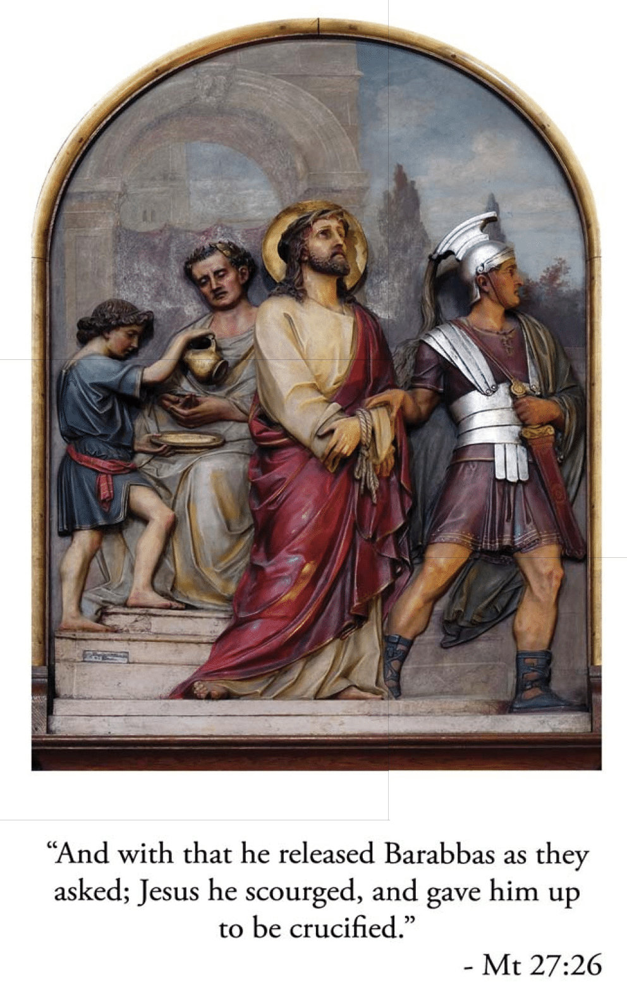
Consider how Jesus Christ, after being scourged and crowned with thorns, was unjustly condemned by Pilate to die on the cross.
My adorable Jesus, it was not Pilate; no, it was my sins that condemned You to die. I beseech You, by the merits of this sorrowful journey, to assist my soul on its journey to eternity. I love You, Jesus, my love, above all things. I repent with my whole heart for ever having offended You. Never permit me to separate myself from You again. Grant that I may love You always and then do with me as You will.
(Our Father, Hail Mary, Glory Be)
Jesus Accepts His Cross

Consider Jesus as He walked this road with the cross on His shoulders, thinking of us, and offering to His Father in our behalf, the death He was about to suffer.
My most beloved Jesus, I embrace all the sufferings You have destined for me until death. I beg You, by all You suffered in carrying Your cross, to help me carry mine with Your perfect peace and resignation. I love You, Jesus, my love, above all things. I repent with my whole heart for ever having offended You. Never permit me to separate myself from You again. Grant that I may love You always and then do with me as You will.
(Our Father, Hail Mary, Glory Be)
Jesus Falls for the First Time
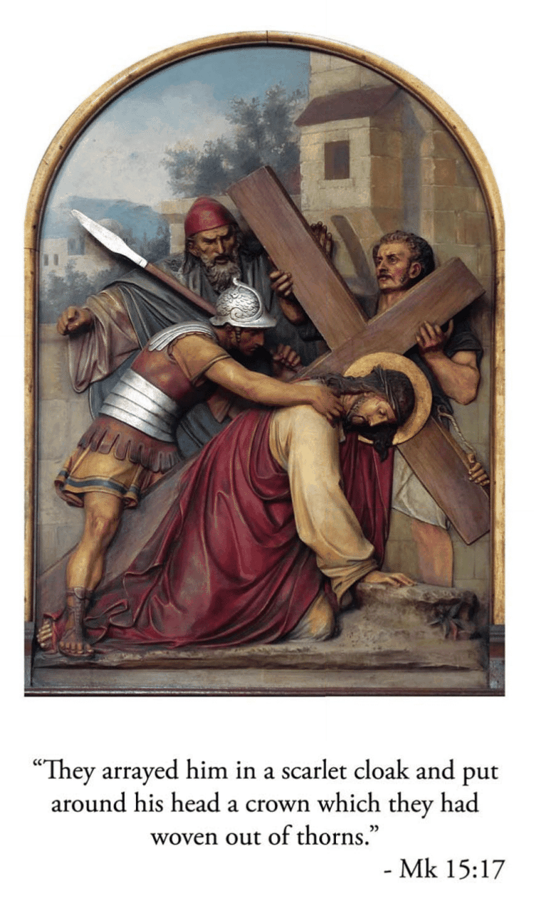
Consider the first fall of Jesus. Loss of blood from the scourging and crowning with thorns had so weakened Him that He could hardly walk, and yet He had to carry that great load upon His shoulders. As the soldiers struck Him cruelly, He fell several times under the heavy cross.
My beloved Jesus, it was not the weight of the cross but the weight of my sins that made You suffer so much. By the merits of this first fall, save me from falling into mortal sin. I love You, Jesus, my love, above all things. I repent with my whole heart for ever having offended You. Never permit me to separate myself from You again. Grant that I may love You always and then do with me as You will.
(Our Father, Hail Mary, Glory Be)
Jesus Meets His Afflicted Mother
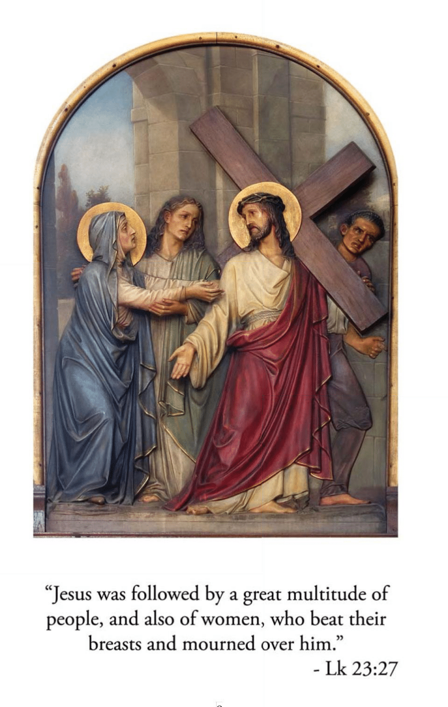
Consider how the Son met His Mother on His way to Calvary. Jesus and Mary gazed at each other and their looks became as so many arrows to wound those hearts which loved each other so tenderly.
My most loving Jesus, by the pain You suffered in this meeting grant me the grace of being truly devoted to Your most holy Mother. And you, my Queen, who were overwhelmed with sorrow, obtain for me by your prayers a tender and a lasting remembrance of the passion of your divine Son. I love You, Jesus, my love, above all things. I repent with my whole heart for ever having offended You. Never permit me to separate myself from You again. Grant that I may love You always and then do with me as You will.
(Our Father, Hail Mary, Glory Be)
Simon Helps Jesus Carry His Cross
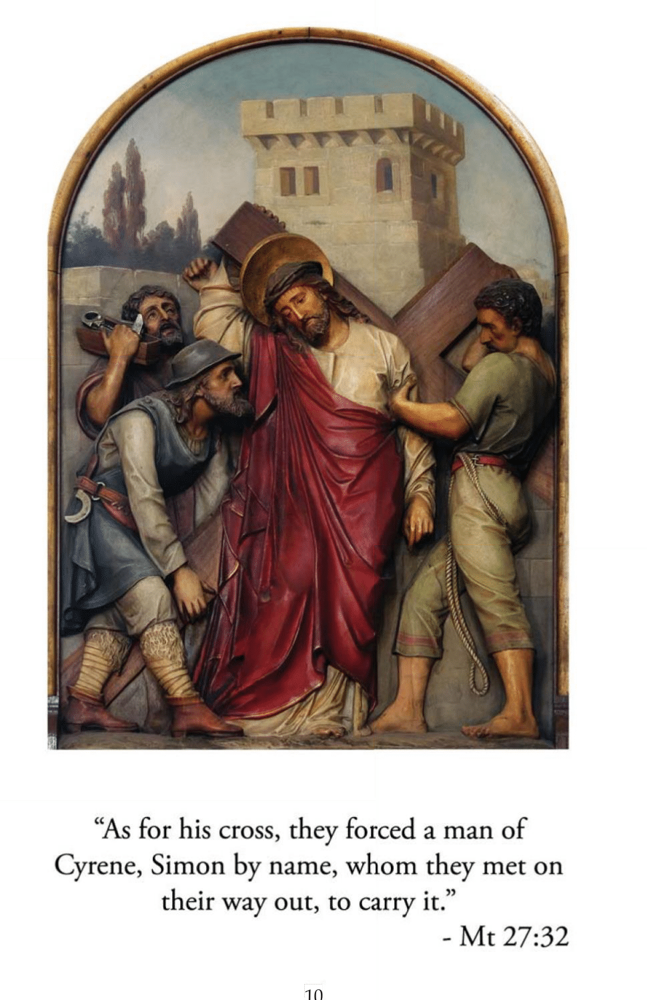
Consider how weak and weary Jesus was. At each step He was at the point of expiring. Fearing that He would die on the way when they wished Him to die the infamous death of the cross, they forced Simon of Cyrene to help carry the cross after our Lord.
My beloved Jesus I will not refuse the cross as Simon did. I accept it and embrace it. I accept in particular the death that is destined for me with all the pains that may accompany it. I unite it to Your death and I offer it to You. You have died for love of me; I will die for love of You and to please You. Help me by Your grace. I love You, Jesus, my love, above all things. I repent with my whole heart for ever having offended You. Never permit me to separate myself from You again. Grant that I may love You always and then do with me as You will.
(Our Father, Hail Mary, Glory Be)
Veronica Offers Her Veil to Jesus
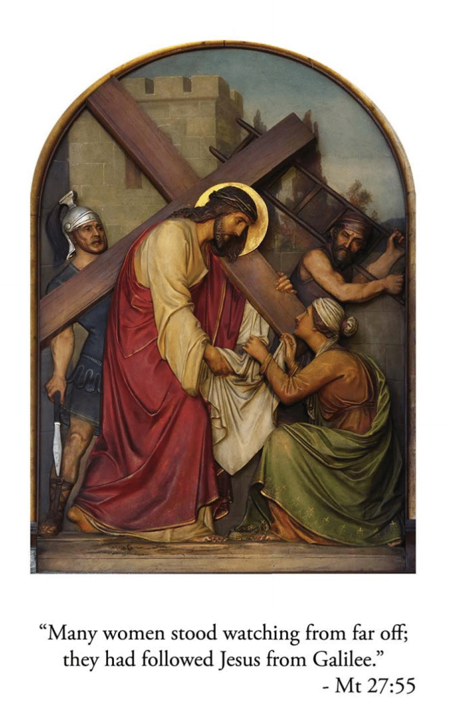
Consider the compassion of the holy woman, Veronica. Seeing Jesus in such distress, His face bathed in sweat and blood, she presented Him with her veil. Jesus wiped His face, and left upon the cloth the image of His sacred countenance.
My beloved Jesus, Your face was beautiful before You began this journey; but, now, it no longer appears beautiful and is disfigured with wounds and blood. Alas, my soul also was once beautiful when it received Your grace in Baptism, but I have since disfigured it with my sins. I love You, Jesus, my love, above all things. I repent with my whole heart for ever having offended You. Never permit me to separate myself from You again. Grant that I may love You always and then do with me as You will.
(Our Father, Hail Mary, Glory Be)
Jesus Falls the Second Time
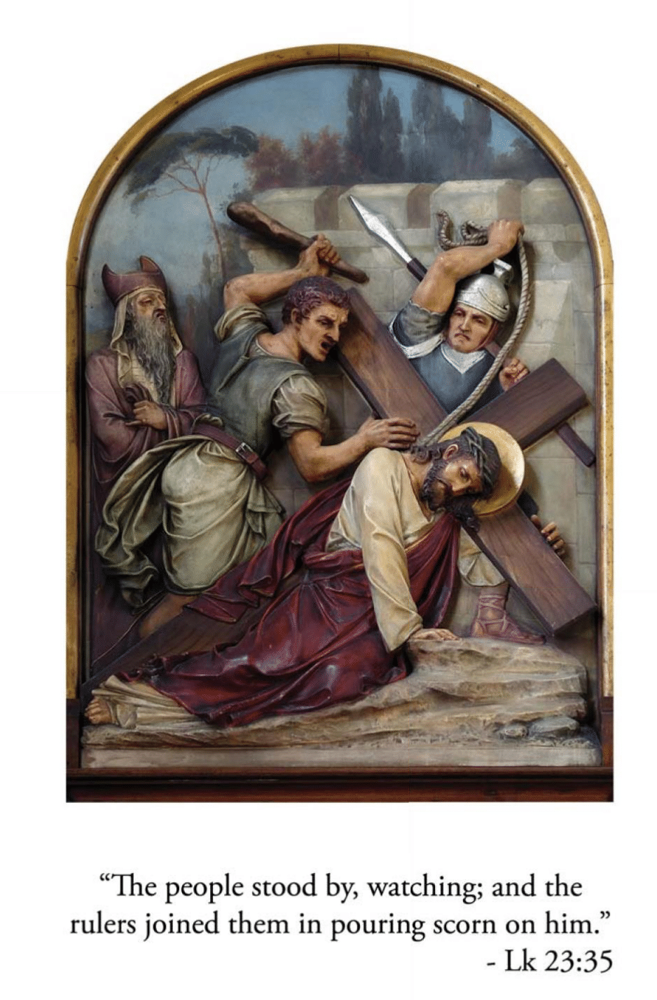
Consider how the second fall of Jesus under His cross renews the pain in all the wounds of the head and members of our afflicted Lord.
My most gentle Jesus, how many times You have forgiven me, and how many times I have fallen again and begun again to offend You! By the merits of this second fall, give me the grace to persevere in Your love until death. Grant, that in all my temptations, I may always have recourse to You. I love You, Jesus, my love, above all things. I repent with my whole heart for ever having offended You. Never permit me to separate myself from You again. Grant that I may love You always and then do with me as You will.
(Our Father, Hail Mary, Glory Be)
Jesus Speaks to the Women
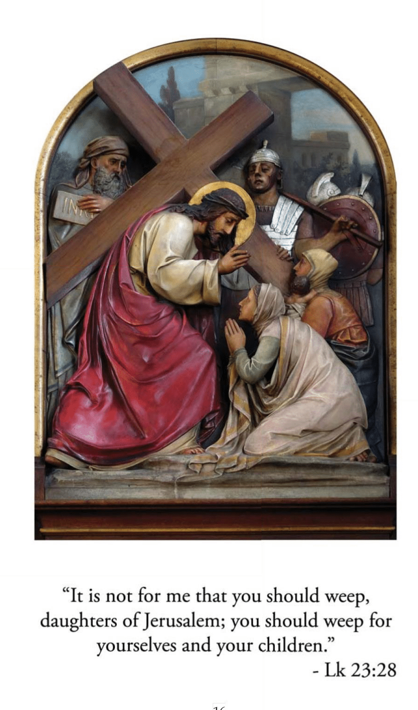
Consider how the women wept with compassion seeing Jesus so distressed and dripping with blood as He walked along. Jesus said to them, "Weep not so much for me, but rather for your children."
My Jesus, laden with sorrows, I weep for the sins which I have committed against You because of the punishment I deserve for them; and, still more, because of the displeasure they have caused You who have loved me with an infinite love. It is Your love, more than the fear of hell, which makes me weep for my sins. I love You, Jesus, my love, above all things. I repent with my whole heart for ever having offended You. Never permit me to separate myself from You again. Grant that I may love You always and then do with me as You will.
(Our Father, Hail Mary, Glory Be)
Jesus Falls the Third Time
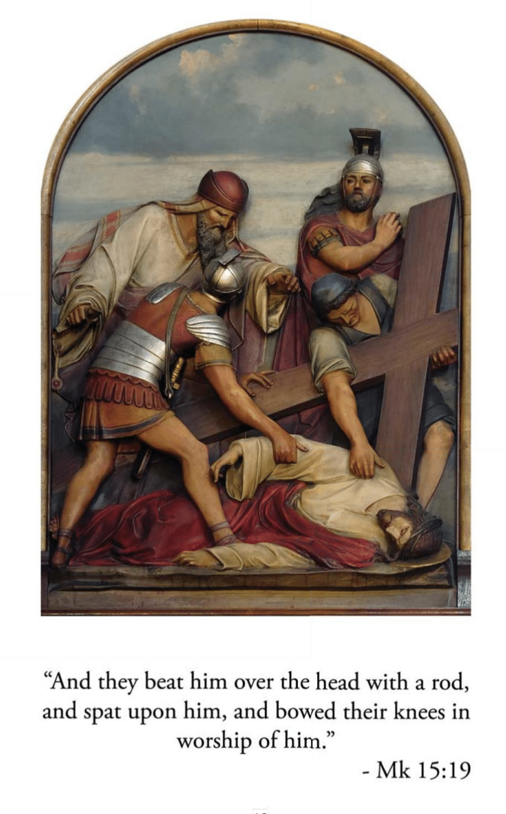
Consider how Jesus Christ fell for the third time. He was extremely weak and the cruelty of His executioners was excessive; they tried to hasten His steps though He hardly had strength to move.
My outraged Jesus, by the weakness You suffered in going to Calvary, give me enough strength to overcome all human respect and all my evil passions which have led me to despise Your friendship. I love You, Jesus, my love, above all things. I repent with my whole heart for ever having offended You. Never permit me to separate myself from You again. Grant that I may love You always and then do with me as You will.
(Our Father, Hail Mary, Glory Be)
Jesus is Stripped of His Garments
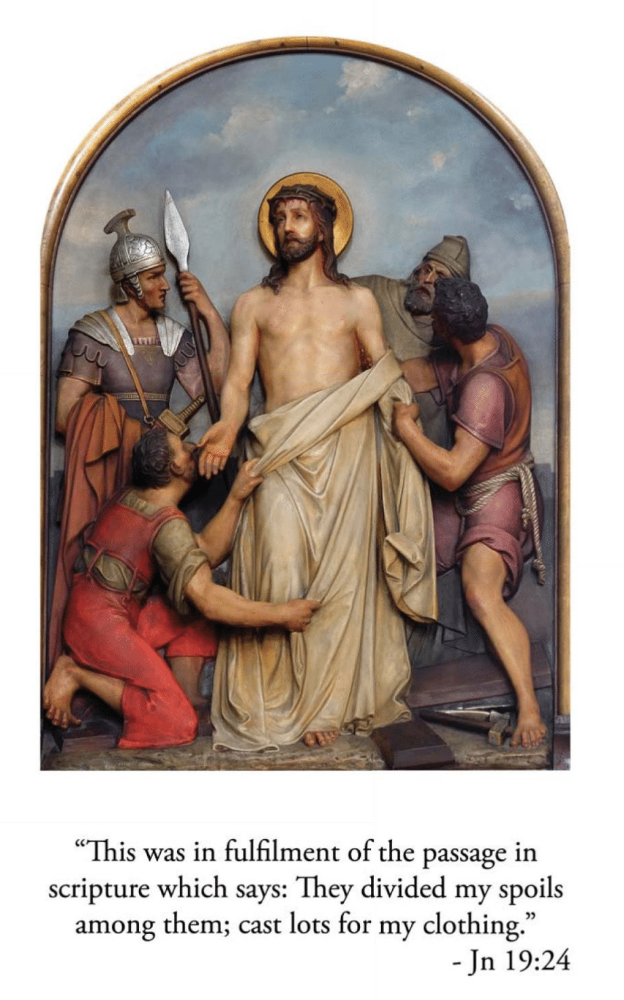
Consider how Jesus was violently stripped of His clothes by His executioners. The inner garments adhered to His lacerated flesh and the soldiers tore them off so roughly that the skin came with them. Have pity for your Savior so cruelly treated and tell Him:
My innocent Jesus, by the torment You suffered in being stripped of Your garments, help me to strip myself of all attachment for the things of earth, that I may place all my love in You who are so worthy of my love. I love You, Jesus, my love, above all things. I repent with my whole heart for ever having offended You. Never permit me to separate myself from You again. Grant that I may love You always and then do with me as You will.
(Our Father, Hail Mary, Glory Be)
Jesus is Nailed to the Cross
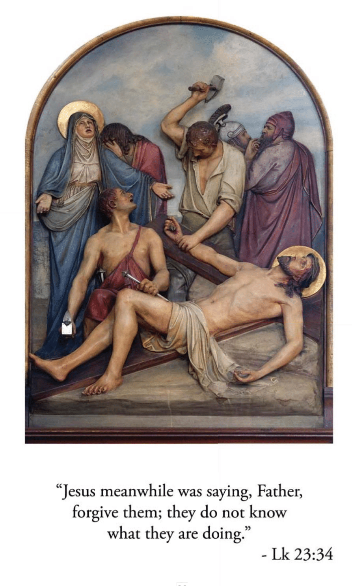
Consider Jesus, thrown down upon the cross, He stretched out His arms and offered to His eternal Father the sacrifice of His life for our salvation. They nailed His hands and feet, and then, raising the cross, left Him to die in anguish.
My despised Jesus, nail my heart to the cross that it may always remain there to love You and never leave You again. I love You, Jesus, my love, above all things. I repent with my whole heart for ever having offended You. Never permit me to separate myself from You again. Grant that I may love You always and then do with me as You will.
(Our Father, Hail Mary, Glory Be)
Jesus Dies Upon the Cross
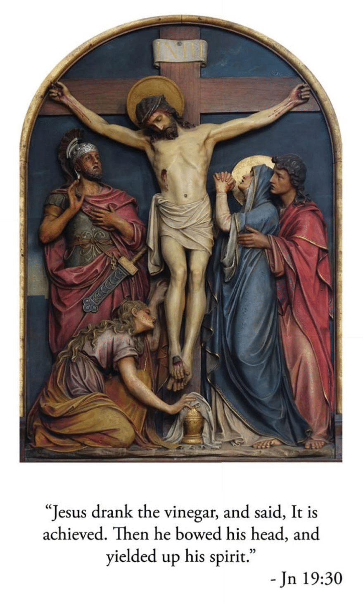
Consider how your Jesus, after three hours of agony on the cross, is finally overwhelmed with suffering and, abandoning Himself to the weight of His body, bows His head and dies.
My dying Jesus, I devoutly kiss the cross on which You would die for love of me. I deserve, because of my sins, to die a terrible death; but Your death is my hope. By the merits of Your death, give me the grace to die embracing Your feet and burning with love for You. I yield my soul into Your hands. I love You, Jesus, my love, above all things. I repent with my whole heart for ever having offended You. Never permit me to separate myself from You again. Grant that I may love You always and then do with me as You will.
(Our Father, Hail Mary, Glory Be)
Jesus is Taken Down From the Cross
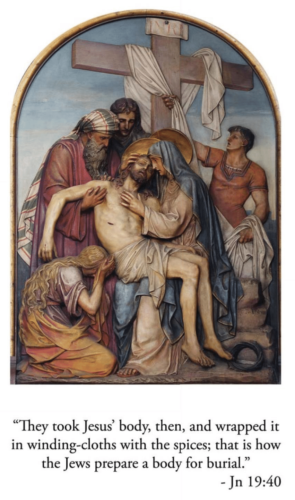
Consider how, after our Lord had died, He was taken down from the cross by two of His disciples, Joseph and Nicodemus, and placed in the arms of His afflicted Mother. She received Him with unutterable tenderness and pressed Him close to her bosom.
O Mother of Sorrows, for the love of Your Son, accept me as Your servant and pray to Him for me, And You, my Redeemer, since you have died for me, allow me to love You, for I desire only You and nothing more. I love You, Jesus, my love, above all things. I repent with my whole heart for ever having offended You. Never permit me to separate myself from You again. Grant that I may love You always and then do with me as You will.
(Our Father, Hail Mary, Glory Be)
Jesus is Placed in the Sepulcher
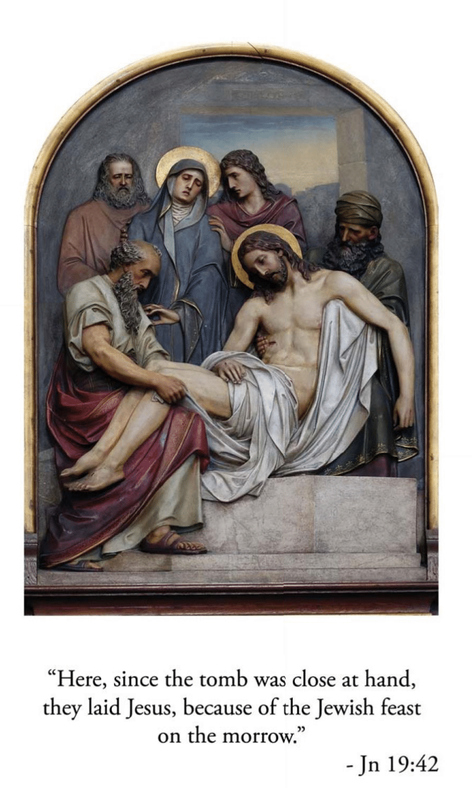
Consider how the disciples carried the body of Jesus to its burial, while His holy Mother went with them and arranged it in the sepulcher with her own hands. They then closed the tomb and all departed.
Oh, my buried Jesus, I kiss the stone that closes You in. But You gloriously did rise again on the third day. I beg You by Your resurrection that I may be raised gloriously on the last day, to be united with You in heaven, to praise You and love You forever. I love You, Jesus, my love, above all things. I repent with my whole heart for ever having offended You. Never permit me to separate myself from You again. Grant that I may love You always and then do with me as You will.
(Our Father, Hail Mary, Glory Be)
Divine Praises
Blessed be God.
Blessed be His Holy Name.
Blessed be Jesus Christ, true God and true man.
Blessed be the name of Jesus.
Blessed be His Most Sacred Heart.
Blessed be His Most Precious Blood.
Blessed be Jesus in the Most Holy Sacrament of the Altar.
Blessed be the Holy Spirit, the Paraclete.
Blessed be the great Mother of God, Mary most holy.
Blessed be her holy and Immaculate Conception.
Blessed be her Glorious Assumption.
Blessed be the name of Mary, Virgin and Mother.
Blessed be Saint Joseph, her most chaste spouse.
Blessed be God in His angels and in His Saints.
Prayer to Jesus Christ Crucified
My good and dear Jesus, I kneel before You, asking You most earnestly to engrave upon my heart a deep and lively faith, hope, and charity, with true repentance for my sins, and a firm resolve to make amends. As I reflect upon Your five wounds, and dwell upon them with deep compassion and grief, I recall, good Jesus, the words the Prophet David spoke long ago concerning Yourself: "They pierced My hands and My feet; they have numbered all My bones."
"At the cross her station keeping, Stood the mournful Mother weeping, Close to Jesus to the last."